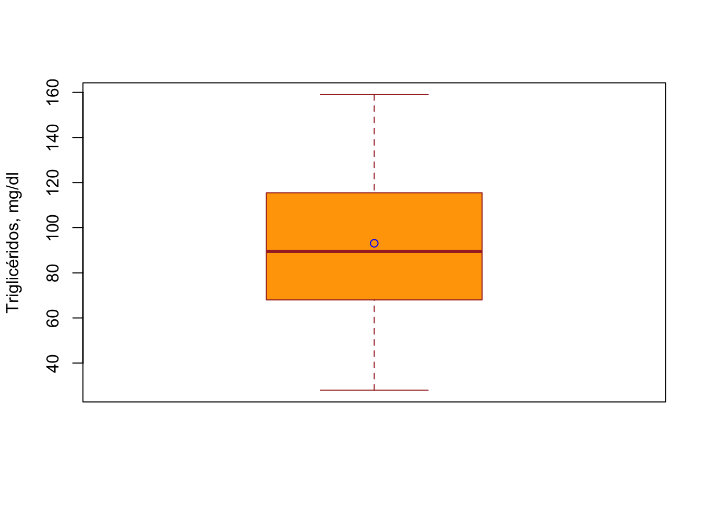

Gráficas
2.5. Gráficas.
Una parte fundamental del proceso de análisis de datos es la presentación visual de los datos y los resultados de análisis de los mismos. Las tablas cumplen parte de ese objetivo, sin embargo se ven limitadas cuando se quieren presentar gran cantidad de datos o cuando los resultados de un análisis necesitan una representación gráfica (en un análisis de regresión, por ejemplo).
R provee excelente capacidades de graficación, tanto en su instalación base, como mediante paquetes como lattice y ggplot2. En esta sección estaremos usando las gráficas de la instalación base y el paquete ggplot2.
2.5.1. Gráficas con la instalación base de R.
Al finalizar esta sección podrás construir gráficas de puntos y líneas, de cajón, de barras e histogramas.
Con la instalación base de R podemos realizar las gráficas más comunes para la visualización de datos y resultados, aunque con algunas limitaciones de edición y en las alternativas de diseño.
Gráficas de puntos (scatter plots)
Este tipo de gráfica puede ser utilizado para representar la relación entre dos variables numéricas. En este ejemplo vamos a construir una gráfica para visualizar la posible relación entre las muertes anuales y la disponibilidad de camas de hospital, en ciudades pequeñas de los Estados Unidos. Utilizaremos el comando plot( ) y algunos de sus argumentos de diseño.
# leer datos de archivo csv
deaths_hosp <- read.csv("data/death_small_cities.csv")
# construir la gráfica
scatter <- plot(x = deaths_hosp$hosp100K, y = deaths_hosp$death1K, # selección de variables en los ejes
pch = 16, # tamaño de los puntos
frame = FALSE, # dibujar recuadro
xlab = "Camas disponibles/100K habitantes ", # nombre eje X
ylab = "Muertes anuales/1K habitantes", # nombre eje Y
col = "blue") # color de los puntosFigura 1 Relación entre la cantidad de muertes anuales por mil habitantes y la disponibilidad de camas por cien mil habitantes, en 53 ciudades pequeñas de los Estados Unidos.
Guardar gráfica en archivo .jpg
Las gráficas se pueden guardar automáticamente desde el código, en un archivo, .jpeg por ejemplo; para esto usamos el comando jpeg(“nombre_del_archivo.jpg”), justo antes de la construcción de la gráfica, y colocando dev.off() justo después del código de la gráfica.
# abrir archivo jpg
jpeg("scatter.jpg")
# gráfica
scatter <- plot(x = deaths_hosp$hosp100K, y = deaths_hosp$death1K, # selección de variables en los ejes
pch = 16, # tamaño de los puntos
frame = FALSE, # dibujar recuadro
xlab = "Camas disponibles/100K habitantes ", # nombre eje X
ylab = "Muertes anuales/1K habitantes", # nombre eje Y
col = "blue") # color de los puntos
# cerrar archivo jpg
dev.off()Construir gráfica en archivo .R y guardarla desde [Plots]
Si el código para construir la gráfica se corre en un archivo de edición .R, la gráfica, por defecto, aparece en la ventana de Plots de RStudio; desde allí puede ser exportada, usando Export, en diferentes formatos o copiada.
VIDEO
Gráfica de líneas (line plots) y series de tiempo (time series)
Cuando la variable en el eje Y cambia de manera continua con respecto a la variable X, podemos unir los puntos con líneas; este es el caso de las gráficas de series de tiempo. En este ejemplo vamos a graficar el cambio en el tiempo de casos de CoviD-19 y hospitalizaciones en Australia.
# cargar datos al sistema
covid_aussie <- read.csv("data/CoviD-19 Australia.csv")
# cambiar NA por 0 en hospitalizados
covid_aussie$hospitalizados[is.na(covid_aussie$hospitalizados)] <- 0
# transformar fechas en texto a datos tipo fecha
new_date <- as.Date(covid_aussie$date, "%d-%b")
# construir gráfica base con primera Y
plot(new_date, covid_aussie$contagiados,
type = "l",
frame = FALSE,
pch = 12,
col = "red",
xlab = "Fecha",
ylab = "Individuos")
# Añadir segunda Y
lines(new_date, covid_aussie$hospitalizados,
pch = 12,
col = "blue",
type = "l",
lty = 2)
# Añadir leyenda
legend("topleft", legend=c("Contagiados", "Hospitalizados"),
col=c("red", "blue"),
lty = 1:2,
cex=0.8)Figura 2 Casos de contagios detectados de CoviD-19 y cantidad de hospitalizaciones entre Febrero y Junio de 2020, en Australia.
Gráficas de barras
Las gráficas de barras pueden ser una alternativa a una tabla, y sirven tanto para valores de estadísticos, como para frecuencias de variables categóricas o discretas.
Barras de valores promedios con segmentos para medidas de dispersión
En el R base se utiliza el comando barplot, asociado a otras funciones para incluir diversos elementos gráficos. En este ejemplo usaremos los datos y estadísticos calculados de la sección 2.2.2.
# cargar datos
ca_ratas <- read.csv("data/calcio-ratas.csv")
# cálculo de los estadísticos
library(doBy)
descriptivas <- summaryBy(caplasma ~ list(hormona,sexo),
data = ca_ratas,
FUN = function(x) {
c(media = mean(x),
var = var(x),
de = sd(x),
es = sd(x)/sqrt(length(x)),
CV = (sd(x)/mean(x))*100) })
barC <- barplot(height = descriptivas$caplasma.media,
names.arg = c("NO-H/F", "NO-H/M", "SI-H/F", "SI-H/M"),
ylim = c(0, 40),
cex.names = 0.75,
xlab = "Tratamientos",
ylab = "Ca-plasma, mg/dl",
border = "black",
col = "tan",
axes = TRUE)
segments(barC, descriptivas$caplasma.media - descriptivas$caplasma.es, barC,
descriptivas$caplasma.media + descriptivas$caplasma.es, lwd = 1.5)Figura 3 Efecto de tratamientos con hormona y el factor sexo, en la concentración de calcio plasmático en ratas.
Gráficas para mostrar distribución de frecuencias de datos continuos
Cuando tenemos variables numéricas nos interesa conocer la distribución de sus valores, como parte de un análisis preliminar de los datos, antes de realizar pruebas estadísticas.
Gráfica de caja y bigotes (box & whisker plot)
La gráfica de box & whisker permite mostrar los cuartiles primero (borde inferior de la caja), mediana (línea central) y tercero (borde superior de la caja), además de los límites superiores e inferiores (“bigotes”) de los cuartiles más y menos 1.5 veces la distancia intercuartil (ICD), equivalente a aproximadamente las percentilas 90% y 10%, respectivamente; además se puede mostrar la media. Usaremos el comando boxplot para su construcción.
# cargar datos
triglicerido <- read.csv("data/triglicerido.csv")
# gráfica box&whisker
x <- triglicerido$trigliceridos
boxplot(x,
ylab = "Triglicéridos, mg/dl",
xlab = "",
col = "orange",
border = "brown",
horizontal = FALSE
)
points(mean(x), col="blue")
Figura 4 Cuartiles (primero, mediana y tercero), percentilas +/- DIC y media (círculo azul), para valores de triglicéridos en sangre (mg/dl) en humanos, entre 21 y 79 años.
Histograma
El histograma es la manera clásica de representar la distribución de frecuencia para clases (bins) de una variable continua. El comando hist se usa para construirlo, pero como veremos es muy limitado su diseño al compararlo con el paquete ggplot2.
hist(x,
xlab="Triglicéridos, mg/dl",
ylab = "Frecuencia",
main = NULL,
border="blue",
col="green",
xlim=c(0, 200),
las=1,
breaks=8)
Figura 5 Histograma (frecuencia) para niveles de triglicéridos en sangre (mg/dl) en humanos, entre 21 y 79 años.
2.5.2. Gráficas con el paquete ggplot2.
Al finalizar esta sección podrás construir gráficas de puntos y líneas, de cajón, de barras e histogramas, utilizando el paquete ggplot2.
Gráfica de puntos con ggplot2
library(ggplot2)
# Basic scatter plot
ggplot(deaths_hosp, aes(x=hosp100K, y=death1K)) +
geom_point(size=2, shape=1, colour = "blue") +
labs(x = "Disponibilidad de camas en hospitales/100K habitantes",
y = "Cantidad de muertes anuales/mil habitantes")Figura 1g Relación entre la cantidad de muertes anuales por mil habitantes y la disponibilidad de camas por cien mil habitantes, en 53 ciudades pequeñas de los Estados Unidos.
Gráfica de líneas (line plots) y series de tiempo (time series) con ggplot2
# cargar datos al sistema
covid_aussie <- read.csv("data/CoviD-19 Australia.csv")
# cambiar NA por 0 en hospitalizados
covid_aussie$hospitalizados[is.na(covid_aussie$hospitalizados)] <- 0
# cambio de texto a formato de fecha
new_date <- as.Date(covid_aussie$date, "%d-%b")
# Gráfica básica
ggplot() +
geom_line(data = covid_aussie,
aes(x=new_date, y=contagiados,
color = "Contagiados")) +
geom_line(data = covid_aussie,
aes(x=new_date, y=hospitalizados,
color = "Hospitalizados")) +
xlab("Fecha") +
ylab("Cantidad de individuos") +
labs(color="Pacientes")Figura 2g Casos de contagios detectados de CoviD-19 y cantidad de hospitalizaciones entre Febrero y Junio de 2020, en Australia.
Gráficas de barras
Barras de estadísticas descriptivas por tratamiento
# Gráfica de barras con errores
ggplot(descriptivas, aes(x=hormona, y=caplasma.media, fill=sexo)) +
geom_bar(stat="identity", color="black",
position=position_dodge()) +
geom_errorbar(aes(ymin=caplasma.media-caplasma.es,
ymax=caplasma.media+caplasma.es),
width=.2,
position=position_dodge(.9)) +
labs(x = "Tratamiento con hormona", y = "Ca plasmático, mg/dl")Figura 3g Efecto de tratamientos con hormona y el factor sexo, en la concentración de calcio plasmático en ratas.
Barras de frecuencia por tratamiento
# cargar datos de archivo .Rdata
load("./data/Arthr.Rdata")
# gráfica de barras separadas
ggplot(Arthritis, aes(x=Treatment, fill=Improved)) +
geom_bar(position="dodge")Figura 3gg Efecto del tratamiento con una droga nueva, en pacientes con artritis, a los que se les suministró un placebo y una dosis de la droga.
Gráficas para mostrar distribución de frecuencias de datos continuos con ggplot2
Box & Whisker plot
# cargar datos
triglicerido <- read.csv("data/triglicerido.csv")
# box & whisker plot
ggplot(triglicerido, aes(x = "",y = trigliceridos)) +
geom_boxplot(outlier.shape = NA, colour = "tan") +
geom_jitter(width = 0.2) +
stat_summary(fun=mean, geom="point", shape=10, size=5, color="red", fill="red") +
labs(y = "Triglicéridos en sangre, mg/dl")Figura 4g Cuartiles (primero, mediana y tercero), percentilas +/- DIC y media (círculo rojo), para valores de triglicéridos en sangre (mg/dl) en humanos, entre 21 y 79 años.
Histograma con distribución normal
library(tidyverse)
## histograma con curva de densidad normal
# cálculo de media y desviación estándar
m_sd <- triglicerido %>%
summarise(means = mean(trigliceridos), sd=sd(trigliceridos))
# histograma con curva distribución normal
ggplot(triglicerido, aes(x=trigliceridos)) +
geom_histogram(aes(y=..density..), position="identity", binwidth=15, color="blue", fill="gray") +
stat_function(fun = dnorm, color="red", size=1, args=list(mean=m_sd$means, sd=m_sd$sd)) +
labs(x="Triglicéridos en sangre, mg/dl", y="densidad")Figura 5g Histograma (densidad) para niveles de triglicéridos en sangre (mg/dl) en humanos, entre 21 y 79 años. Curva de distribución normal teórica para la muestra.
EXTRA: Gráfica en Tres Dimensiones.
A continuación un ejemplo de una gráfica de tres ejes, para las variables largo de sépalo (X), ancho de sépalo (Y) y largo de pétalo (Z), de los datos ‘iris’ en R.
# paquete 3D
library(rgl)
# Datos 'iris' en R
data <- iris
# Añadir columna de colores para diferenciar especies de iris
mycolors <- c('royalblue1', 'darkcyan', 'oldlace')
data$color <- mycolors[ as.numeric(data$Species) ]
# gráfica 3D
par(mar=c(0,0,0,0))
plot3d(
x=data$`Sepal.Length`, y=data$`Sepal.Width`, z=data$`Petal.Length`,
col = data$color,
type = 's',
radius = .1,
xlab="Sepal Length", ylab="Sepal Width", zlab="Petal Length")
rglwidget()